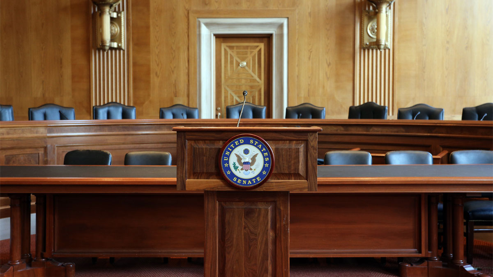

The Constitution specifies most of the enumerated, or expressed, powers of Congress, including the right to impose taxes, borrow funds, regulate commerce, and declare war. These powers are enumerated in Article 1, Section 8 of the Constitution.
Congress also enjoys the right to
make all Laws which shall be necessary and proper for carrying into execution the foregoing Powers, and all other Powers vested by this Constitution in the Government of the United States, or in any Department or Officer thereof.
This is called the elastic, or necessary and proper, clause.
The powers explicitly given to Congress in the Constitution include the following:
Select each item to learn more.
To promote the general welfare, Congress can pass laws designed to help people live better. You can see how this could be interpreted in many different ways; it has been the source of political disagreements throughout American history.
Congress has control over the federal budget. While the President is tasked with coming up with a budget proposal every year, Congress has the final say on approving the budget. They also have the power to collect taxes, practice deficit spending, and borrow currency. They have the power to coin money and to create laws related to bankruptcy.
Congress has the sole power to declare war, as well as the power to establish and maintain an army and a navy.
Congress may create federal courts below the Supreme Court. The appointment of judges to the Supreme Court (and lower courts) must be approved by the Senate. In this way, Congress has a check on the power of both the executive and judicial branches.
Congress has the power to impeach, or accuse an official, such as the president or a federal judge, of serious wrongdoing. Only the House can impeach. The Senate has the power to put the impeached official on trial. If found guilty, the official is removed from office.
Congress can make laws regarding copyrights, trademarks, patents, and other types of intellectual property protection. This means that people who invent or create things are able to enjoy legal protections that allow them to exclusively determine what happens with their invention or creation.
Congress has the power to establish and maintain a postal office as well as create a road system to allow for the dissemination of mail throughout the United States.
Congress can make rules related to naturalization, or the process through which a citizen of one country becomes the citizen of another country. Becoming a US citizen takes years, though the length of the process varies based on how the person arrived in the United States.
The Constitution gives Congress the power to standardize the systems of weights and measures the United States uses. Due to its history as British colonies, the United States uses imperial British measurements such as miles, pounds, and gallons. It also uses the metric system, including meters, grams, and liters.
The Constitution allows Congress to purchase, maintain, and dispose of districts. Federal districts include military installations, prisons, and national parks. They also include US-owned places that are not states, including the District of Columbia and territories such as Puerto Rico, Guam, and the US Virgin Islands.
Congress has the power to establish courts below the Supreme Court. Congress can also name punishments for a few specific categories of crimes: counterfeiting, piracy, offenses against international law, and treason.
